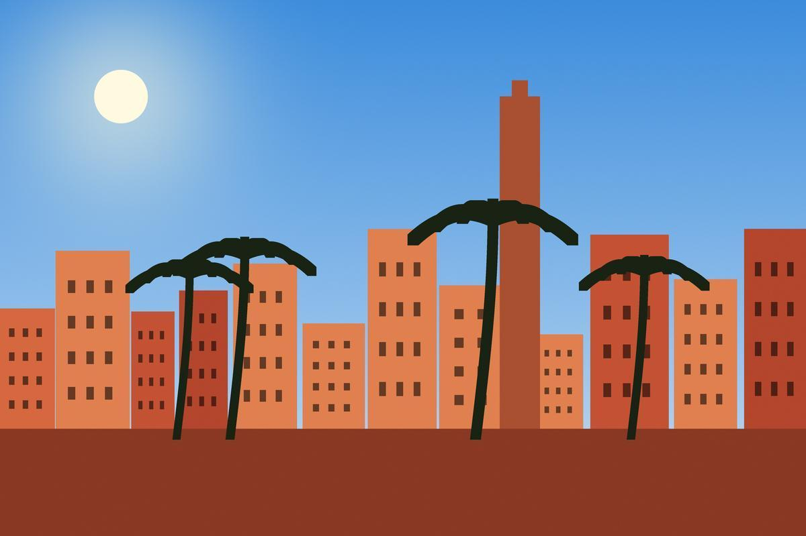
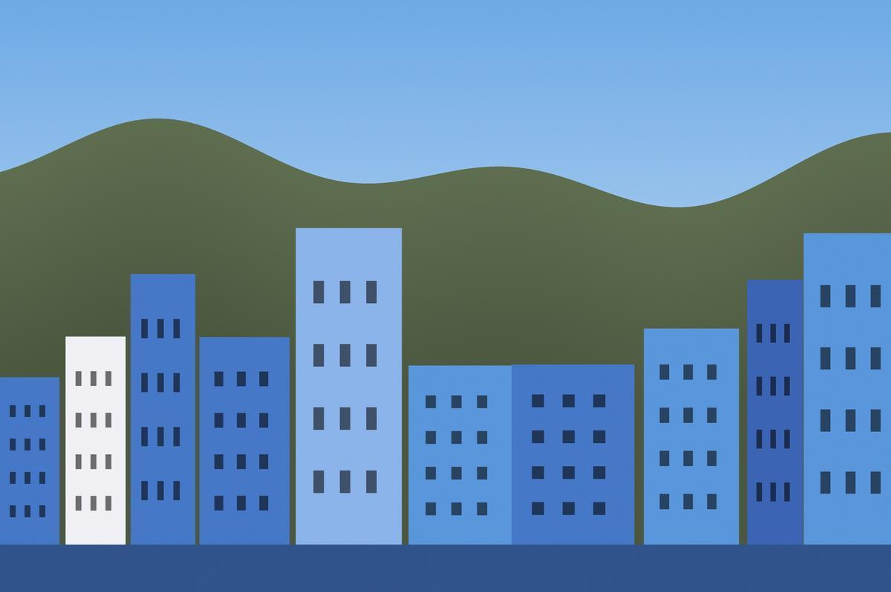
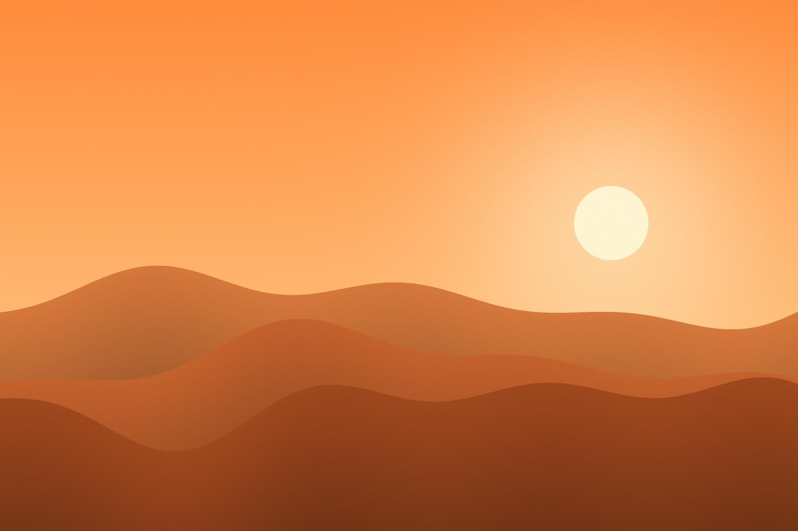
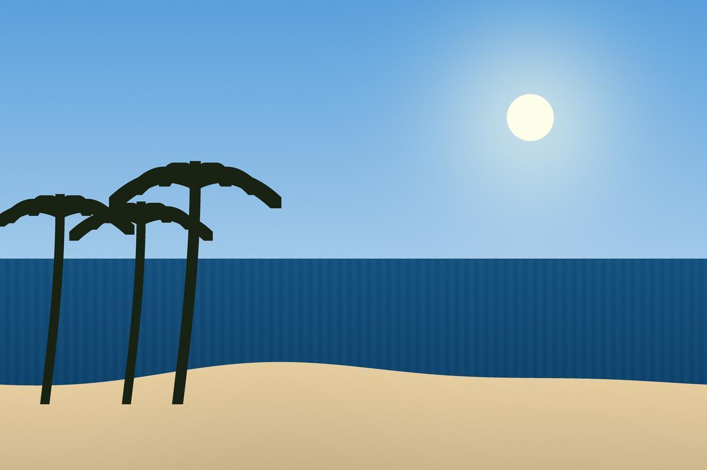

Nos destinations
Les incontournables du Maroc
Le Maroc est un pays magnifique qui offre une grande diversité de paysages : des montagnes de l'Atlas aux dunes du Sahara, en passant par les plages de l'Atlantique et les villes impériales. Chaque ville a son charme, son histoire et sa cuisine. Marrakech est la destination la plus demandée par nos clients, connue pour sa place Jemaa el-Fna, ses souks et ses jardins. Chefchaouen, la ville bleue, est située dans les montagnes du Rif et attire de plus en plus de touristes chaque année. Le désert de Merzouga est idéal pour une nuit en bivouac sous les étoiles, une expérience que nos clients n'oublient jamais. Enfin Essaouira est parfaite pour se reposer au bord de l'océan après un circuit fatiguant. Toutes nos destinations sont accessibles en minibus climatisé depuis Marrakech ou Casablanca.
Marrakech, la ville rouge

Circuit Marrakech impériale : 4 jours / 3 nuits. Prix : à partir de 3 490 DH par personne.
- Visite de la place Jemaa el-Fna
- Balade dans les souks
- Dîner dans un riad traditionnel
Attention : places limitées pour l'été !
Chefchaouen, la perle bleue

Excursion à la journée depuis Tanger ou Fès, avec guide francophone.
Le désert de Merzouga

Nuit en bivouac, balade à dos de dromadaire et coucher de soleil sur les dunes de l'Erg Chebbi.
Essaouira, la ville du vent

Plus d'informations sur Essaouira dans notre galerie photos.